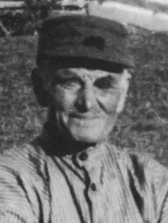
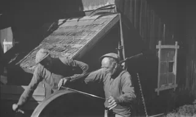
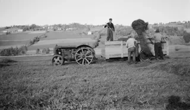
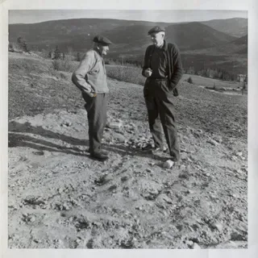

Også omtalt som Syver Mikkelhus
Født 13.06.1874 Vis datoavvik · Død 19.04.1975 · 100 år
Registrert ektefelle: Johanne Mortensdatr. · 5 registrerte barn i dette utvalget. Familie
Familiekoblinger har forbehold – se familietabellen.
Datogrunnlag
Fødsel
Valgt dato: 13.06.1874
Sannsynlig fødested på husmannsplassen under Frøyse øvre.
Full vurdering og kildebelegg for fødselDød
Valgt dato: 19.04.1975
Full vurdering og kildebelegg for dødForbehold og grunnlag
- Johanne Mortensdatr. Li-eie: Ektefelle – Identitetsforbehold. Vurdering og kildebelegg i familietabellen
- Ole Amundsen Stensletten: Far – Identitetsforbehold. Vurdering og kildebelegg i familietabellen
- Marthe Johnsdatt. Stensletten: Mor – Identitetsforbehold. Vurdering og kildebelegg i familietabellen
- Ole Syversen Frøisevolden: Barn – Identitetsforbehold. Vurdering og kildebelegg i familietabellen
- Ivar Syversen Mikkelhus: Barn – Identitetsforbehold. Vurdering og kildebelegg i familietabellen
- Magnus Syversen Mikkelhus: Barn – Identitetsforbehold. Vurdering og kildebelegg i familietabellen
- Margit Syversdatter Mikkelhus: Barn – Identitetsforbehold. Vurdering og kildebelegg i familietabellen
- Borghild Syversdatter Mikkelhus: Barn – Identitetsforbehold. Vurdering og kildebelegg i familietabellen
- Ole Syversen Frøisevolden → Johanne Mortensdatr. Li-eie: Mor – Identitetsforbehold. Vurdering og kildebelegg i barnets familietabell
- Ivar Syversen Mikkelhus → Johanne Mortensdatr. Li-eie: Mor – Identitetsforbehold. Vurdering og kildebelegg i barnets familietabell
- Magnus Syversen Mikkelhus → Johanne Mortensdatr. Li-eie: Mor – Identitetsforbehold. Vurdering og kildebelegg i barnets familietabell
- Margit Syversdatter Mikkelhus → Johanne Mortensdatr. Li-eie: Mor – Identitetsforbehold. Vurdering og kildebelegg i barnets familietabell
- Borghild Syversdatter Mikkelhus → Johanne Mortensdatr. Li-eie: Mor – Identitetsforbehold. Vurdering og kildebelegg i barnets familietabell
Primærnavnet bygger på sannsynlig fødested Frøysevolden nedre etter brukerens samlede vurdering. Stedet er en husmannsplass under Frøyse øvre; bestemt bygning er ikke dokumentert. Syver Mikkelhus beholdes som registrert alias. Forskningshistorikk for Syver · Forskningsoversikt
Biografi
Syver Olsen ble født 13. juni 1874 og døpt 19. juli samme år i Gausdal sogn. Dåpsinnførselen oppgir foreldrene som Ole Amundsen og Marthe Johnsdatter. Faren var husmann, med bosted ført som «Frøsen /øvre». Syver ble sannsynligvis født på husmannsplassen Frøysevolden nedre under Frøyse øvre. Vurderingen bygger på farens dåpsoppføring, bygdebokas opplysning om at foreldrene «kom vel til Nedre Frøysevolden rundt 1870» og familiens bosted i tellingen 1875. Kilder: dåpsinnførselen, Engjomsboka, s. 136 og tellingen 1875.
Ved folketellingen i 1875 bodde Syver hos foreldrene på Frøysevolden nedre. Ole var husmann med jord, og husholdningen omfattet også Randine, Sina, John og Agnete, ført som barn i familien. Da Syver senere så tilbake på barndommen, fortalte han om knappe matressurser: ordentlig brød hørte julen til. Det er et minne formidlet nær hundre år senere. Kilder: tellingen 1875 og Gausdalsminner, s. 26.
Den 28. april 1889 ble Syver konfirmert med karakteren «Meget godt». Han bodde fortsatt på Frøysevolden nedre. I folketellingen 1891 er en Syver Olsen på Hovde ført som tjenestegutt med gårdsarbeid. I jubileumsintervjuet fra 1974 fortalte Syver også at han hadde overtatt farens pliktdager da farens helse sviktet, men uten å tidfeste dette. Kilder: konfirmasjonen, tellingen 1891 og Gausdalsminner, s. 25.
Ifølge det samme tilbakeblikket kom Syver til Waalen (moderne form Vole), i begynnelsen av 1890-årene. Han fortalte at han møtte sin kommende kone der, i stua og ved danseplassen ved elva. Når de møttes, er ikke kjent. Den 6. mai 1897 giftet han seg med Johanne, registrert her som Johanne Mortensdatter Lier eie. Kilder: Gausdalsminner, s. 25 og 27, ministerialboka og klokkerboka.
Rundt århundreskiftet fikk Syver ifølge intervjuet plassen Mikkelhus under Vole. Folketellingen i 1900 viser ham og Johanne der med sønnen Ole. Familien vokste: i 1910 var også Ivar, Magnus og Margit med i husholdningen, og i 1920 var Borghild kommet til. Syver er ført som husmann med jord og jordbruksarbeid i 1900, og som husmann med skogsarbeid som bierverv i 1920. Kilder: Gausdalsminner, s. 25, tellingene 1900, 1910 og 1920.
I minnene fra husmannstiden beskrev Syver en husholdning med lite kontanter, der korn og poteter fra jordflekkene var viktige for livsgrunnlaget. Potetlompe, kjøtt og flesk hørte til maten han fremhevet. Når frosten tok kornet høyt oppe i åsen, skulle familien ha fått hjelp nede i bygda. Artikkelen forteller også om skiftende arbeidsvilkår, fra fem pliktdager i uken til faste dager og teiger i onnene, og senere lønnet arbeid mot leie for bruket. Fremstillingen veksler mellom Syvers erfaringer og husmennenes vilkår mer generelt; daterte kontrakter er ikke lest. Kilde: Gausdalsminner, s. 25–26.
Arbeidsdagene kunne bli lange. I intervjuets skildring startet arbeidet hos husbondsfolket klokken fem, mens hjemveien opp bakkene til Mikkelhus kunne begynne halv åtte om kvelden, med to lange pauser gjennom dagen. Om vinteren var det vedarbeid på setra og kjøring av høy hjem til gården. Setra var arbeidet han likte best, slik minnene hans er formidlet. Karlsen fremhevet ham som en dyktig slåttekar; da Syver ble spurt hvem som gikk først med ljåen, svarte han forsiktig at det kanskje ofte var ham. Kilde: Gausdalsminner, s. 26–27.
Syver omtalte den første tiden som strevsom og knyttet bedre vilkår til at Kristian Waalen overtok gården. Ifølge jubileumsartikkelen kjøpte han selv bruket i 1932 for 4 150 kroner. Grunnboken har en dagbokført fradeling 25. august 1932, men denne føringen bekrefter ikke i seg selv artikkelens kjøper og pris; det underliggende kjøpsskjøtet er ikke lest. Året etter, 30. september 1933, døde Johanne. Dødsannonsen, undertegnet Syver Mikkelhus, oppgir Røde Kors i Follebu som dødssted. Kirkeboken fører lungetuberkulose som dødsårsak. Kilder: Gausdalsminner, s. 27, grunnboken, Johannes dødsannonse og dødsinnførselen.
I grunnboken for Ophus, det tidligere Mikkelhus, ble føderåd til Syver dagbokført 10. oktober 1944 med «fritt ophold». Ti år senere, 10. desember 1954, ble han ifølge diplomet tilkjent medalje fra Det Kongelige Selskap for Norges Vel for 55 års tjeneste på Waalen gård i Østre Gausdal. Karlsen anslo i 1974 tilknytningen til bortimot 70 år og viste blant annet til vedhogst som 83-åring. Kilder: grunnboken, medaljediplomet og Gausdalsminner, s. 27.
Da Nils Ole Karlsen besøkte Syver en kveld et par dager før hundreårsdagen i juni 1974, satt han ved kjøkkenbordet og spiste «spikkjiflesk og søyll» mens han fulgte med på trafikken nedenfor. Artikkelen tegner et varmt bilde av en gammel mann som fortsatt tok del i familiens hverdag. Karlsen forteller at Syver leste aviser uten briller, lot småbarna sitte på fanget og leste fjernsynstekstene for dem, og ryddet leker etter det minste oldebarnet. Kilde: Gausdalsminner, s. 24.
Hørselen var blitt dårligere, og den foregående vinteren hadde han ifølge artikkelen vært sengeliggende i to måneder. Fortellingen om at han aldri hadde vært hos tannlege, men selv trukket vonde tenner med gjerdetang, ble løftet frem i tittelen. Syver fortalte også at han hadde begynt å røyke som 21-åring, og Karlsen beskrev ham med pipe. De nærmeste forklarte den høye alderen med tålmodighet, regelmessige vaner og arbeid ute. Kilde: Gausdalsminner, s. 24–25.
Den 13. juni 1974 fylte Syver hundre år. Jubileumsartikkelen oppga fem barn, elleve barnebarn, 28 oldebarn og tre tippoldebarn, og fortalte at flesteparten var ventet til Opphus samme kveld. Ved avskjeden noen dager tidligere beskrev Karlsen hvordan Syver reiste seg og takket for besøket med et kraftig, varmt håndtrykk. Kilde: Gausdalsminner, s. 24 og 27.
Syver døde 19. april 1975, nær 101 år gammel. Dødsdatoen følger av familiens annonse, datert samme dag og trykt i Gudbrandsdølen 22. april. Der ble han omtalt som «vår alles kjære Syver Mikkelhus», navnet som også fulgte ham i jubileumsportrettet året før. Kilde: dødsannonsen.
Livsløp
Om rekkefølgen
Noen datoer er omtrentlige, åpne eller overlappende. Rekkefølgen følger periodens start eller den oppgitte grensen; dette gir ikke en sikker innbyrdes rekkefølge. Kildenes datopresisjon er beholdt.| Hendelse | Dato | Sted | Opplysning |
|---|---|---|---|
| Fødsel | 13.06.1874 Vis datoavvikGrunnboka K-0026 oppgir 13.07.1874 ved føderåd 1944. Etter vurderingen er dette bevart som avvik; 13.06.1874 fra dåpsgrunnlaget beholdes. Juliavvikets feilårsak er ukjent. FT 1920 oppgir 04.06.1874, mens dåpen og konfirmasjonen støtter 13.06.1874. Hoveddatoen beholdes. Etter brukerens vurdering i vurderingen behandles 04.06.1874 som skrive-/slurvefeil, ikke som en alternativ fødselsdato. | Frøysevolden nedreStedsforbeholdSannsynlig plass etter samlet brukervurdering; dåpen har ikke eget fødestedsfelt for barnet. Bestemt bygning er ukjent. | Sannsynlig fødested på husmannsplassen under Frøyse øvre.19 kilder · vurderingFødsel · 13.06.1874 · Sted: Frøysevolden nedre Registrert: Sannsynlig fødested på husmannsplassen under Frøyse øvre.StedsforbeholdSannsynlig plass etter samlet brukervurdering; dåpen har ikke eget fødestedsfelt for barnet. Bestemt bygning er ukjent.Brukerens samlede vurdering 08.11.2026: Frøysevolden nedre er sannsynlig fødested 13.06.1874. K-0020, trykt side 136, oppgir at foreldrene «kom vel til Nedre Frøysevolden rundt 1870». K-0002 dokumenterer familien på Frøsenvolden nedre 31.12.1875, og K-0001 fører faren som Hmd. med bosted «Frøsen /øvre». Samlet støtter dette en sannsynlig fødsel på plassen under Frøyse øvre, ikke på hovedgården selv. Dette er en godkjent utledning, ikke et utfylt fødestedsfelt eller sikker dokumentasjon av sammenhengende botid eller bestemt bygning. DatoavvikGrunnboka K-0026 oppgir 13.07.1874 ved føderåd 1944. Etter vurderingen er dette bevart som avvik; 13.06.1874 fra dåpsgrunnlaget beholdes. Juliavvikets feilårsak er ukjent. FT 1920 oppgir 04.06.1874, mens dåpen og konfirmasjonen støtter 13.06.1874. Hoveddatoen beholdes. Etter brukerens vurdering i vurderingen behandles 04.06.1874 som skrive-/slurvefeil, ikke som en alternativ fødselsdato.K-0001: Valgt fødselsdato 13.06.1874 i dåpsgrunnlaget; fars bosted og husmannsstand er direkte oppført. Barnets plass er utledet separat; fars kildeform endres ikke. K-0020: Omtrentlig og forbeholden flytteopplysning for foreldrene, ikke en eksakt dato. Bokas fødselsår 1874 er retrospektivt årsstøtte, ikke selvstendig eksakt dato eller direkte fødestedsangivelse for Syver. K-0002: Bosted 31.12.1875 og retrospektivt fødselsår 1874 / Østre Gausdal (bildet: Gausdal). Godkjent personkobling med forbehold; tellingen alene dokumenterer ikke fødested eller fødselsdato. K-0003: Retrospektiv støtte til 13.06.1874 ved konfirmasjonen, uten fødested. K-0004: 1874 og Østre Gausdal i registeret, Herred understreket i bildet; sannsynlig personkobling med forbehold, uten eksakt dato eller fødegård. K-0005 og K-0006: Retrospektivt fødselsår 1874 og fødestedsformene Frøisevolden / Frøsenvolden ved vielsen. Kildeformene beholdes; den nye samlede sannsynlighetsvurderingen gjør ikke hvert av disse feltene til en sikker identifikasjon av bestemt plass. K-0007, K-0008, K-0010, K-0011, K-0012 og K-0014: Retrospektivt år 1874 ved barnas dåp, uten eksakt fødselsdato eller fødested. Tidligere godkjente personkoblinger og deres forbehold beholdes. K-0009: 1874 og Østre Gausdal (T i bildet), uten eksakt dato eller bestemt fødegård; sannsynlig tellingsidentitet med forbehold. K-0013: Retrospektiv støtte til 13.06.1874 og Østre Gausdal (samme-herred-tegn), uten bestemt fødegård. K-0015: Registerets 04.06.1874 og bildets 4 Juni 1874, Østr Gausdal, beholdes som kildeavvik. Etter tidligere brukervurdering behandles datoen som skrive-/slurvefeil; feilårsaken er ikke dokumentert. K-0026: Grunnbokens 13/7-1874 ved føderåd 1944 beholdes som avvik etter tidligere brukervurdering. Hoveddato 13.06.1874 endres ikke. K-0016: Annonsen datert 19.04.1975 oppgir nær 101 år, et omtrentlig aldersbelegg uten ny fødselsdato. K-0064 s. 24–25: 100-årsdag omtalt i artikkelen fra 13.06.1974 og fødsel på en husmannsplass; retrospektiv støtte til dato og plasskategori, uten selvstendig identifikasjon av Frøysevolden nedre. K-0001, K-0002, K-0003, K-0004, K-0005, K-0006, K-0007, K-0008, K-0009, K-0010, K-0011, K-0012, K-0013, K-0014, K-0015, K-0016, K-0026, K-0020, K-0064 |
| Dåp | 19.07.1874 | Gausdal sogn, Østre Gausdal prestegjeld | 1 kilde · vurderingDåp · 19.07.1874 · Sted: Gausdal sogn, Østre Gausdal prestegjeld Registrert:Stedsgrunnlag før redaksjonell opprydding: Gausdal sokn (utledet område). Dato registrert. Gausdal sokn er utledet kildeområde; bestemt kirke ukjent.
|
| Vaksinasjon | 28.05.1875 | — | 1 kilde · vurderingVaksinasjon (oppgitt) · 28.05.1875 · Sted: — Registrert:Stedsgrunnlag før redaksjonell opprydding: Ikke kjent. Oppgitt ved konfirmasjonen i 1889 Registrert: Retrospektivt oppgitt ved konfirmasjonen; vaksinetype ukjent.
|
| Folketelling | 31.12.1875 | Frøsenvolden nedre | Bosatt og tilstede i tellingens husholdning.ForbeholdPersonkoblingen er godkjent med forbehold.1 kilde · vurderingFolketelling / bosted · 31.12.1875 · Sted: Frøsenvolden nedre Registrert: Bosatt og tilstede i tellingens husholdning.ForbeholdPersonkoblingen er godkjent med forbehold.Husholdning 01; tilstede. Identitetskobling godkjent med forbehold. Ingen flyttedato utledet.
|
| Konfirmasjon | 28.04.1889 | Gausdal sogn, Østre Gausdal prestegjeld | Karakter: Meget godt. Bosted Frøysevolden nedre.2 kilder · vurderingKonfirmasjon / bosted · 28.04.1889 · Sted: Gausdal sogn, Østre Gausdal prestegjeld Registrert: Karakter: Meget godt. Bosted Frøysevolden nedre.Stedsgrunnlag før redaksjonell opprydding: Gausdal sokn (kildeområde); bestemt kirke ukjent. Meget godt · bosted Frøysevolden nedre, godkjent tolkning Registrert: Karakter «Meget godt». «Frøsevolden» er registerbosted; stedstolkningen som Frøysevolden nedre er godkjent i vurderingen. Bildelesningen er fortsatt usikker. Bestemt kirke ukjent.
|
| Tilknytning til gård (retrospektivt oppgitt) | ca. 1890 | Vole | Kom til Waalen i begynnelsen av 1890-årene, ifølge artikkelen.1 kilde · vurderingTilknytning til gård (retrospektivt oppgitt) · ca. 1890 · Sted: Vole Registrert: Kom til Waalen i begynnelsen av 1890-årene, ifølge artikkelen. K-0064 s. 25 og 27: retrospektivt intervjuportrett i 1974-kontekst, gjenopptrykt i årgang 1985. «Begynnelsen av 1890-årene» er beholdt som omtrentlig tid; ca. 1890 er ingen eksakt start- eller flyttedato. Hovde-belegget 01.01.1891 beholdes uten sammenslåing av gårdene. Brukeren avklarer 07.11.2026 at Waalen er Vole S-0005. Ingen eget bosted eller ny Vole-navnevariant utledes. Registrert etter den registrerte vurderingen. |
| Folketelling | 01.01.1891 | Hovde | Tjenestegutt med gårdsarbeid.ForbeholdPersonkoblingen er godkjent med forbehold.1 kilde · vurderingFolketelling / bosted · 01.01.1891 · Sted: Hovde Registrert: Tjenestegutt med gårdsarbeid.ForbeholdPersonkoblingen er godkjent med forbehold.Stedsgrunnlag før redaksjonell opprydding: Hovde, registerform. Tjenestegutt med gårdsarbeid · sannsynlig personkobling Registrert: Tjenestetyende, ugift. Sannsynlig identitetskobling; fysisk nærvær ikke fastslått. Ingen flyttedato utledet.
Arbeid · 01.01.1891 · Sted: Hovde Registrert: Tjenestegutt med gårdsarbeid.Tjenestegutt med gårdsarbeid, fra bildet. Yrkesfeltet i registeret er tomt. Ikke eierskap.
|
| Lysing | 02.05.1897 | — | 2 kilder · vurderingLysing · 02.05.1897 · Sted: — Registrert:Stedsgrunnlag før redaksjonell opprydding: Ikke fastslått. Dato knyttet til vielsen med Johanne; ikke utledet forlovelsesdato.
|
| Vielse | 06.05.1897 Vis datoavvikFT 1920 har usikkert datoavvik «7/5[?] 1897». Hoveddato 06.05.1897 fra kirkebøkene beholdes; usikkert dagtall gir ingen ny vielse. | Gausdal sogn, Østre Gausdal prestegjeld | Viet Johanne; første ekteskap for begge.4 kilder · vurderingVielse / bosted · 06.05.1897 · Sted: Gausdal sogn, Østre Gausdal prestegjeld Registrert: Viet Johanne; første ekteskap for begge.DatoavvikFT 1920 har usikkert datoavvik «7/5[?] 1897». Hoveddato 06.05.1897 fra kirkebøkene beholdes; usikkert dagtall gir ingen ny vielse.Stedsgrunnlag før redaksjonell opprydding: Gausdal sokn (kildeområde); bestemt kirke/vielsessted ukjent. Viet Johanne; første ekteskap for begge. Bestemt kirke ukjent; Frøysevolden nedre er godkjent bostedstolkning. FT 1920 har usikkert datoavvik «7/5[?] 1897»; hoveddato beholdes.
K-0020, «Nigard 192.23 (Frøysevolden, nedre)», trykt side 136 og synlig fortsettelse uten sidetall: egen bildelesning av bygdebokas sekundære framstilling fra 2016. Oppgir gift 1897, som årsstøtte til den eksisterende vielsen 06.05.1897. K-0005, K-0006, K-0015, K-0020 Stand ved vielsen · 06.05.1897 · Sted: «Frøsterveden» / «Frøsenvolden»; Frøysevolden nedre Registrert: Husmann.Stedsgrunnlag før redaksjonell opprydding: «Frøsterveden» (K-0005) / «Frøsenvolden» (K-0006); godkjent tolkning av K-0005-bostedet: Frøysevolden nedre. «Husmand» i klokkerboken; ministerialbokens felt/lesning avviker. Ikke eierskap.
|
| Stand ved sønnens dåp | 20.02.1898 | «Frøisevolden»StedsforbeholdDen historiske stedsidentiteten er uavklart; kildeformen er beholdt. | Husmann.2 kilder · vurderingStand ved sønnens dåp · 20.02.1898 · Sted: «Frøisevolden» Registrert: Husmann.StedsforbeholdDen historiske stedsidentiteten er uavklart; kildeformen er beholdt.«Hmd.» i klokkerboken, tolket husmann. Ikke eierskap eller «med Jord».
Forelder / bosted ved sønnens dåp · 20.02.1898 · Sted: «Frøisevolden» Registrert: Far til Ole.StedsforbeholdDen historiske stedsidentiteten er uavklart; kildeformen er beholdt.ForbeholdPersonkoblingen har forbehold; se samlet kildevurdering.Far til Ole; foreldrebosted «Frøisevolden». Identitetskobling godkjent med forbehold; stedsidentitet uavklart.
|
| Flytting | ca. 1900 | Mikkelhus | Kom til Mikkelhus omkring århundreskiftet ifølge artikkelen; også udatert omtalt i bygdeboka.2 kilder · vurderingFlytting · ca. 1900 · Sted: Mikkelhus Registrert: Kom til Mikkelhus omkring århundreskiftet ifølge artikkelen; også udatert omtalt i bygdeboka. K-0020, «Nigard 192.23 (Frøysevolden, nedre)», trykt side 136 og synlig fortsettelse uten sidetall: egen bildelesning av bygdebokas sekundære framstilling fra 2016. K-0020 daterer ikke flyttingen. Eksisterende godkjent Mikkelhus-/hovedgårdskobling beholdes, uten eksakt flyttedato eller automatisk flytting for Johanne. Registrert 06.11.2026 etter vurdering.K-0064 s. 25 oppgir at Syver fikk plassen Mikkelhus ved århundreskiftet, her registrert som ca. 1900. Dette beriker samme hendelse, ikke en ny flytting. Brukeren avklarer Waalen som Vole S-0005; arbeidssted/hovedgård og eget bosted Mikkelhus holdes adskilt. Registrert etter den registrerte vurderingen 07.11.2026. |
| Folketelling | 03.12.1900 | Mikkelhus | Husfar, gift; bosatt og tilstede.ForbeholdPersonkoblingen er godkjent med forbehold.1 kilde · vurderingFolketelling / bosted · 03.12.1900 · Sted: Mikkelhus Registrert: Husfar, gift; bosatt og tilstede.ForbeholdPersonkoblingen er godkjent med forbehold.Husfar, gift, bosatt og tilstede i husholdning 01. Sannsynlig identitetskobling. Ingen flyttedato utledet.
Arbeid · 03.12.1900 · Sted: Mikkelhus Registrert: Husmand m. jord, jordbr.arbeide.«Husmand m. jord, jordbr.arbeide» ved tellingen. Ikke eierskap.
|
| Forelder / bosted og stand ved sønnens dåp | 04.05.1902 | Mikkelhus | Far til Ivar.ForbeholdPersonkoblingen har forbehold; se samlet kildevurdering.1 kilde · vurderingForelder / bosted og stand ved sønnens dåp · 04.05.1902 · Sted: Mikkelhus Registrert: Far til Ivar.ForbeholdPersonkoblingen har forbehold; se samlet kildevurdering.Far til Ivar; foreldrebosted Mikkelhus. Sannsynlig identitetskobling. Oppgitt stand «Husmd.». Ingen flyttedato eller sikker fysisk tilstedeværelse utledet.
|
| Forelder / bosted og stand ved sønnens dåp | 12.05.1904 | Mikkelhus | Far til Magnus.ForbeholdPersonkoblingen har forbehold; se samlet kildevurdering.1 kilde · vurderingForelder / bosted og stand ved sønnens dåp · 12.05.1904 · Sted: Mikkelhus Registrert: Far til Magnus.ForbeholdPersonkoblingen har forbehold; se samlet kildevurdering.Far til Magnus; foreldrebosted Mikkelhus. Sannsynlig identitetskobling. Oppgitt stand «Husmd.». Ingen flyttedato eller sikker fysisk tilstedeværelse utledet.
|
| Forelder / bosted og foreløpig stand ved datterens dåp | 11.11.1906 | Mikkelhus | Far til Margit.ForbeholdPersonkoblingen har forbehold. Standen er usikker bildelesning; registerfeltet er tomt.1 kilde · vurderingForelder / bosted og foreløpig stand ved datterens dåp · 11.11.1906 · Sted: Mikkelhus Registrert: Far til Margit.ForbeholdPersonkoblingen har forbehold. Standen er usikker bildelesning; registerfeltet er tomt.Far til Margit; foreldrebosted Mikkelhus. Sannsynlig identitetskobling. Stand er foreløpig bildelesning; registerfelt tomt, ingen sikker yrkesendring. Ingen flyttedato eller sikker fysisk tilstedeværelse utledet.
|
| Folketelling | 01.12.1910 | Mikkelhus | Husfar, gift; bosatt og tilstede.ForbeholdPersonkoblingen er godkjent med forbehold.1 kilde · vurderingFolketelling / bosted · 01.12.1910 · Sted: Mikkelhus Registrert: Husfar, gift; bosatt og tilstede.ForbeholdPersonkoblingen er godkjent med forbehold.Husfar, gift, bosatt og tilstede i husholdning 01. Sannsynlig identitetskobling. Ingen flyttedato utledet.
|
| Arbeid | 01.12.1910 | Mikkelhus | Husmd Jordbr.arb.1 kilde · vurderingArbeid · 01.12.1910 · Sted: Mikkelhus Registrert: Husmd Jordbr.arb.«Husmd Jordbr.arb» ved tellingen. Ikke eierskap eller arbeid hele livet.
|
| Forelder / bosted og foreløpig stand ved datterens dåp | 20.08.1911 | Mikkelhus | Far til Borghild.ForbeholdPersonkoblingen har forbehold. Standen er usikker bildelesning; registerfeltet er tomt.1 kilde · vurderingForelder / bosted og foreløpig stand ved datterens dåp · 20.08.1911 · Sted: Mikkelhus Registrert: Far til Borghild.ForbeholdPersonkoblingen har forbehold. Standen er usikker bildelesning; registerfeltet er tomt.Far til Borghild; foreldrebosted Mikkelhus. Sannsynlig identitetskobling. Stand er foreløpig bildelesning; registerfelt tomt, ingen sikker yrkesendring. Ingen flyttedato eller sikker fysisk tilstedeværelse utledet.
|
| Folketelling | 01.12.1920 | Mikkelhus | Hovedperson, gift; fast bosatt og tilstede.ForbeholdPersonkoblingen er godkjent med forbehold.1 kilde · vurderingFolketelling / bosted · 01.12.1920 · Sted: Mikkelhus Registrert: Hovedperson, gift; fast bosatt og tilstede.ForbeholdPersonkoblingen er godkjent med forbehold.Hovedperson, gift; fast bosatt og tilstede Ja i personseddelen. Registerets bostatusfelt er tomt. Sannsynlig identitetskobling. Ingen flyttedato utledet.
|
| Arbeid / livsstilling | 01.12.1920 | Mikkelhus | Husmann; bierverv skogsarbeid.1 kilde · vurderingArbeid / livsstilling · 01.12.1920 · Sted: Mikkelhus Registrert: Husmann; bierverv skogsarbeid.Husmand med bierverv Skogsarbeide i personseddelen. Ikke eierskap eller dokumentert varighet.
|
| Statsborgerskap / trossamfunn | 01.12.1920 | — | Norge og Statskirken.1 kilde · vurderingStatsborgerskap / trossamfunn (oppgitt) · 01.12.1920 · Sted: — Registrert: Norge og Statskirken.Stedsgrunnlag før redaksjonell opprydding: Ikke eget hendelsessted. Norge og Statskirken understreket i personseddelen; datert kildeopplysning.
|
| Arbeidsdyktighet | 01.12.1920 | — | Oppført som arbeidsdyktig.1 kilde · vurderingArbeidsdyktighet (oppgitt) · 01.12.1920 · Sted: — Registrert: Oppført som arbeidsdyktig.Stedsgrunnlag før redaksjonell opprydding: Ikke eget hendelsessted. Arbeidsdyktig understreket i personseddelen; ikke en medisinsk vurdering.
|
| Kjøp av bruk (retrospektivt oppgitt) | 1932 | Mikkelhus | Kjøpte seg fri for 4 150 kroner, ifølge artikkelen.ForbeholdKjøper og kjøpesum er artikkelens opplysninger; underliggende skjøte er ikke lest.1 kilde · vurderingKjøp av bruk (retrospektivt oppgitt) · 1932 · Sted: Mikkelhus Registrert: Kjøpte seg fri for 4 150 kroner, ifølge artikkelen.ForbeholdKjøper og kjøpesum er artikkelens opplysninger; underliggende skjøte er ikke lest. |
| Stand ved hustruens dødsinnførsel | 30.09.1933 | — | Omtalt som Husmann.1 kilde · vurderingStand ved hustruens dødsinnførsel · 30.09.1933 · Sted: — Registrert: Omtalt som Husmann. K-0036, side 141, kvinneinnførsel 4: «Husmann Syver Mikkelhus» i mannens navn-/stillingsfelt. Registrert 06.11.2026 etter vurdering. Dette er en datert omtale ved Johannes dødsinnførsel, ikke nytt bosteds-/eierskapsbelegg, bestemt arbeidssted eller dokumentert arbeidsperiode. |
| Føderåd | 10.10.1944 | Ophus | Fritt ophold. |
| Medaljetildeling | 10.12.1954 | — | Medaljen for lang og tro tjeneste.ForbeholdTildeling ifølge diplom; overrekkelse og proveniens er ikke bekreftet.2 kilder · vurderingMedaljetildeling (ifølge diplom) · 10.12.1954 · Sted: — Registrert: Medaljen for lang og tro tjeneste.ForbeholdTildeling ifølge diplom; overrekkelse og proveniens er ikke bekreftet.Stedsgrunnlag før redaksjonell opprydding: Ikke oppgitt. Medaljen for lang og tro tjeneste tilkjent ifølge diplomet. Overrekkelse og proveniens ikke bekreftet.
K-0064 s. 27 omtaler medalje fra Norges vel for tjeneste på Waalen, uten tildelingsdato eller bekreftet overrekkelse. Samme allerede registrerte medalje; diplomet beholder datoen 10.12.1954. Mellomtittelens flertall gir ingen ny utmerkelse. Registrert etter den registrerte vurderingen 07.11.2026. |
| Død | 19.04.1975 | — | 4 kilder · vurderingDød · 19.04.1975 · Sted: — Registrert:Stedsgrunnlag før redaksjonell opprydding: Ukjent. 19.04.1975, utledet fra annonse og eksplisitt støttet av grunnbokas dødsmerknad. Dødssted ukjent; Gausa er dateringssted. Annonsen er dokumentert i Gudbrandsdølen 22.04.1975, side 14; eldre bildefils eksakte opphav er ukjent.
K-0020, «Nigard 192.23 (Frøysevolden, nedre)», trykt side 136 og synlig fortsettelse uten sidetall: egen bildelesning av bygdebokas sekundære framstilling fra 2016. Oppgir dødsår 1975; støtter året, ikke eksakt dato eller dødssted. |
| Kunngjort begravelse og minnestund (planlagt) | 25.04.1975 | Østre Gausdal kirke | Kunngjort kl. 13.00, med minnestund.ForbeholdKunngjort plan; gjennomføring og gravleggingsdato er ikke bekreftet.1 kilde · vurderingKunngjort begravelse og minnestund (planlagt) · 25.04.1975 · Sted: Østre Gausdal kirke Registrert: Kunngjort kl. 13.00, med minnestund.ForbeholdKunngjort plan; gjennomføring og gravleggingsdato er ikke bekreftet.Stedsgrunnlag før redaksjonell opprydding: Østre Gausdal kirke (kunngjort utgangspunkt). Kunngjort kl. 13.00 fra Østre Gausdal kirke, med minnestund. Ikke bekreftet gjennomført eller sikker gravleggingsdato.
|
Udaterte hendelser
| Hendelse | Dato | Sted | Opplysning |
|---|---|---|---|
| Bostedstilknytning via far | Ved innførselen i 1874 | Frøyse øvreStedsforbeholdStedstilknytningen er antatt eller foreløpig; se den bevarte kildevurderingen. | Antatt tilknytning via far.1 kilde · vurderingBostedstilknytning via far · Ved innførselen i 1874 · Sted: Frøyse øvre Registrert: Antatt tilknytning via far.StedsforbeholdStedstilknytningen er antatt eller foreløpig; se den bevarte kildevurderingen.Stedsgrunnlag før redaksjonell opprydding: Frøyse øvre, foreløpig normalisering. Antatt tilknytning via far; normaliseringen er foreløpig. Ikke flytting eller sikkert fødested.
|
| Altergang | Dato ukjent; omtalt ved vielsen 1897 | «Ø. Gausdal» | 1 kilde · vurderingAltergang (oppgitt) · Dato ukjent; omtalt ved vielsen 1897 · Sted: «Ø. Gausdal» Registrert:Omtalt ved vielsen i 1897 Registrert: «Ø. Gausdal» oppgitt ved vielsen; dato og bestemt kirke ukjent.
|
| Tjenestetid og tjenestested | Oppgitt i diplom 10.12.1954 | Waalen gård i Ø.Gausdal | 55 års tjeneste ifølge diplomet.ForbeholdPersonkoblingen har forbehold; se samlet kildevurdering.2 kilder · vurderingTjenestetid og tjenestested (oppgitt) · Oppgitt i diplom 10.12.1954 · Sted: Waalen gård i Ø.Gausdal Registrert: 55 års tjeneste ifølge diplomet.ForbeholdPersonkoblingen har forbehold; se samlet kildevurdering.Diplomet oppgir 55 års tjeneste. Eksakt periode og stilling er ikke fastslått; gården er knyttet til Vole etter brukeravklaringen 07.11.2026, uten eget bostedsbelegg.
K-0064 s. 27: Karlsen anslår «bortimot 70 år» ut fra ankomst i begynnelsen av 1890-årene og vedarbeid som 83-åring. Dette er omtrentlig tilknytning/arbeidsaktivitet, ikke samme måling som diplomets 55 tjenesteår. En omtalt kvinnes vedbeskrivelse (navn skjermet) er hennes vurdering. Ingen eksakt start/slutt eller sammenhengende ansettelse utledes. Waalen = Vole S-0005 er uttrykkelig avklart av brukeren i den registrerte vurderingen 07.11.2026. |
Biografiske opplysninger
Notatene er registrert 07.11.2026 etter brukerens registrerte vurdering, med oppgitt opphav og forbehold. De er kildebundne parafraser, ikke en ferdig biografi. Brødtekstens fortellekontekst er 1974 etter gjenopptrykkets opplysning; artikkelen står i årgang 1985, metadataoppgitt 3. opplag 1991.
Besøket og småbarna. Registrert: Karlsen forteller om en kveld et par dager før 100-årsdagen, da Syver satt ved kjøkkenbordet med «spikkjiflesk og søyll» og fulgte trafikken nedenfor. Journalisten beskriver også hvordan han lot småbarna sitte på fanget, leste fjernsynstekstene for dem og ryddet leker etter det minste oldebarnet. Tålmodigheten og rollen som barnepasser er journalistens fremstilling; kveldsrutinene er ikke alle bekreftet observert under ett besøk. Eksakt besøksdato er ukjent. K-0064, s. 24.
Helse, lesning og vaner. Registrert: Artikkelen beskriver avislesning uten briller, rett rygg, krokstav, svekket hørsel, første legebesøk etter 90 og to måneders sengeleie den foregående vinteren. Den hevder at han selv trakk vonde tenner med gjerdetang og aldri gikk til tannlege. Syver svarer at han begynte å røyke som 21-åring; Karlsen beskriver pipen og lite alkohol. De nærmestes forklaring på alderen — regelmessighet, tålmodighet og arbeid — er deres oppfatning, ikke medisinsk årsak. Ingen diagnose eller eksakt røykestartdato utledes. K-0064, s. 24–25.
Barndom, mat og familiens livsgrunnlag. Registrert: I Karlsens tilbakeblikk fikk Syver ordentlig brød bare til jul som barn. Senere hadde han, kona og fem barn lite penger, men korn/poteter fra jordflekkene; Syver fremstilles som fornøyd med mat som potetlompe, kjøtt og flesk. Ved frostskade på kornet skal familien ha fått hjelp nede i bygda. År og hjelpere navngis ikke. Den generelle påstanden om at husmenn manglet stekeovner blir ikke et sikkert faktum om hans egen bolig. K-0064, s. 26.
Pliktdager og endrede arbeidsvilkår. Registrert: Artikkelen forteller at Syver overtok pliktdager for faren da farens helse sviktet; faren er ikke navngitt og tidspunkt/sykdom er ukjent. Egen husmannstid beskrives først med fem dager pr. uke, senere med onnedager og bestemte mælinger, omtalt som fire mål. Til slutt beskrives lønnet gårdsarbeid mot leie for bruket. Framstillingen veksler mellom Syver og husmenn generelt; ingen personlig kontrakt er lest eller endringsår fastslått. K-0064, s. 25–26.
Arbeidsdag, hjemvei og seter. Registrert: Karlsens fremstilling har arbeidsstart klokken fem, soloppgang på vei til slåtten, hjemvei opp bakkene halv åtte om kvelden og to lange pauser. Vinterarbeidet var ved og høykjøring fra seterslåtten; lyset styrte dagen. Seterarbeidet fremstilles som det Syver likte best. Dette er fortalt arbeidsliv uten sikkert navngitt seter, ubrutt arbeidsperiode eller en dagsplan som gjaldt hele livet. K-0064, s. 26–27.
Husbondsfolk, stand og et hjem. Registrert: Syver minnes den første tiden som strevsom; bedre vilkår knyttes i artikkelen til en senere gårdbrukers overtakelse (navn skjermet) av Vole og frikjøpene. Ønsket om et hjem og gjerne å leve livet om igjen fremstilles i en varm journalistisk ramme. Utsagnet om at de beste karene ble husmenn er noe han «skal» ha sagt; den generelle forklaringen om bondens valg blir ikke en dokumentert ansettelsesbeslutning om ham. Waalen-gården er knyttet til Vole etter brukerens uttrykkelige avklaring; ingen ny personidentitet er utledet. K-0064, s. 25 og 27.
Ferdigheter, ungdom og andres vurderinger. Registrert: På gårdbrukerens spørsmål (navn skjermet) om hvem som gikk først i slåtten svarer Syver forsiktig at det kanskje ofte var ham. Karlsen fremhever slått, potetrenner også som 80-åring og hopp over skigarder i ungdommen. Kona skal han ha møtt på Vole, «borti stugun» og ved danseplassen ved elva; ingen møtedato eller ny vigsel utledes. En omtalt kvinnes ros (navn skjermet) av finhugget og ordentlig stablet ved er hennes vurdering; journalistens ros og Syvers egne minner holdes adskilt. K-0064, s. 27.
Familien og feiringsplanen. Registrert: Artikkelen omtaler en unavngitt sønnesønn som har overtatt bruket, uten overtakelsesdato. Den oppgir fem barn, 11 barnebarn, 28 oldebarn og tre tippoldebarn; de fleste ventes til Opphus «i kveld» på 100-årsdagen i 1974-konteksten. Dette er kildeoppgitte antall og en plan, ikke bekreftet fremmøte eller nye identitetskoblinger. Avskjedens varme håndtrykk og takkeord er Karlsens beskrivelse av besøket. K-0064, s. 24 og 27.
Familie
| Relasjon | Person | Merknad |
|---|---|---|
| Ektefelle | Johanne Mortensdatr. Li-eie (1873–1933) | Viet 06.05.1897; navneavvik for Johanne.Vurdering og kildebeleggRegistrert: Viet 06.05.1897; navneavvik for Johanne er bevart kildevis.
K-0028: Dødsannonsen datert 30.09.1933 har «Min kjære hustru», navnet Johanne og underskriften Syver Mikkelhus. Brukerens identifikasjon og samlet familie-/navne-/aldersgrunnlag er godkjent i vurderingen. Støttebelegg til eksisterende ekteskap, ikke ny vigselsdato. Generelle mor-/svigermor-/bestemorroller gir ingen bestemte nye personkoblinger. K-0036, Johannes dødsinnførsel 4, 30.09.1933: bildet fører henne som gift og «Husmann Syver Mikkelhus» i mannens felt; registeret kaller ham pårørande. Registrert 06.11.2026 etter vurdering som støtte til eksisterende ektefellekobling. Ingen ny vigselsdato eller fysisk tilstedeværelse utledes. K-0020, «Nigard 192.23 (Frøysevolden, nedre)», trykt side 136 og synlig fortsettelse uten sidetall: egen bildelesning av bygdebokas sekundære framstilling fra 2016. Oppgir ekteskapsår 1897 og fem barn i dette paret. Støtter eksisterende ekteskap og barnetall, uten nye bestemte barn, fullstendighetsgaranti eller erstatning av valgte eksakte datoer. Registrert 06.11.2026 etter vurdering. |
| Far | Ole Amundsen Stensletten (1837–1915) | Oppgitt som far i bygdeboka; koblingen har forbehold. Far oppgitt ved dåpen. Foreløpig identitet; koblingene til senere kilder bygger på samlet grunnlag.Vurdering og kildebeleggRegistrert: Oppgitt som far i bygdeboka; koblingen har forbehold. Far oppgitt ved dåpen. Foreløpig identitet; koblingene til senere kilder bygger på samlet grunnlag.
K-0020, «Nigard 192.23 (Frøysevolden, nedre)», trykt side 136 og synlig fortsettelse uten sidetall: egen bildelesning av bygdebokas sekundære framstilling fra 2016. Barnet er ført under «deres barn» hos Ole og Marthe. Sekundært familiebelegg, ikke selvstendig fødsels-/dåpskontroll; tidligere fortolkning av tellingshusholdningen beholdes. Registrert 06.11.2026 etter vurdering. |
| Mor | Marthe Johnsdatt. Stensletten (d. 1918) | Oppgitt som mor i bygdeboka; koblingen har forbehold. Mor oppgitt ved dåpen. Foreløpig identitet; hennes fysiske tilstedeværelse er ikke fastslått.Vurdering og kildebeleggRegistrert: Oppgitt som mor i bygdeboka; koblingen har forbehold. Mor oppgitt ved dåpen. Foreløpig identitet; hennes fysiske tilstedeværelse er ikke fastslått.
K-0020, «Nigard 192.23 (Frøysevolden, nedre)», trykt side 136 og synlig fortsettelse uten sidetall: egen bildelesning av bygdebokas sekundære framstilling fra 2016. Barnet er ført under «deres barn» hos Ole og Marthe. Sekundært familiebelegg, ikke selvstendig fødsels-/dåpskontroll; tidligere fortolkning av tellingshusholdningen beholdes. Registrert 06.11.2026 etter vurdering. |
| Mulig søsken/halvsøsken | Randine Olsdatter Frøysevolden nedre (1860–1906) | Ført som barn av samme par i bygdeboka; tidligere mors-/halvsøskenforbehold beholdes. Barn i samme husholdning; felles morskap uavklart.Vurdering og kildebeleggRegistrert: Ført som barn av samme par i bygdeboka; tidligere mors-/halvsøskenforbehold beholdes. Barn i samme husholdning; felles morskap uavklart.
K-0020, «Nigard 192.23 (Frøysevolden, nedre)», trykt side 136 og synlig fortsettelse uten sidetall: egen bildelesning av bygdebokas sekundære framstilling fra 2016. Felles foreldregruppe på elleve barn. Dette er bokas slektsframstilling, ikke selvstendig biologisk kontroll. Registrert 06.11.2026 etter vurdering. |
| Mulig søsken/halvsøsken | Sina Olsdatter Frøysevolden nedre (f. 1866) | Ført som barn av samme par i bygdeboka; tidligere mors-/halvsøskenforbehold beholdes. Barn i samme husholdning; felles morskap uavklart. Fadderen Sina O. i 1898 er trolig samme person etter brukerens vurdering; ikke sikkert helsøsterskap.Vurdering og kildebeleggRegistrert: Ført som barn av samme par i bygdeboka; tidligere mors-/halvsøskenforbehold beholdes. Barn i samme husholdning; felles morskap uavklart. Fadderen Sina O. i 1898 er trolig samme person etter brukerens vurdering; ikke sikkert helsøsterskap.
K-0020, «Nigard 192.23 (Frøysevolden, nedre)», trykt side 136 og synlig fortsettelse uten sidetall: egen bildelesning av bygdebokas sekundære framstilling fra 2016. Felles foreldregruppe på elleve barn. Dette er bokas slektsframstilling, ikke selvstendig biologisk kontroll. Registrert 06.11.2026 etter vurdering. |
| Mulig søsken/halvsøsken | John Olsen Frøysevolden nedre (1868–1929) | Ført som barn av samme par i bygdeboka; tidligere mors-/halvsøskenforbehold beholdes. Barn i samme husholdning; felles morskap uavklart.Vurdering og kildebeleggRegistrert: Ført som barn av samme par i bygdeboka; tidligere mors-/halvsøskenforbehold beholdes. Barn i samme husholdning; felles morskap uavklart.
K-0020, «Nigard 192.23 (Frøysevolden, nedre)», trykt side 136 og synlig fortsettelse uten sidetall: egen bildelesning av bygdebokas sekundære framstilling fra 2016. Felles foreldregruppe på elleve barn. Dette er bokas slektsframstilling, ikke selvstendig biologisk kontroll. Registrert 06.11.2026 etter vurdering. |
| Mulig søsken/halvsøsken | Agnete Olsdatter Frøysevolden nedre (f. 1871) | Ført som barn av samme par i bygdeboka; tidligere mors-/halvsøskenforbehold beholdes. Barn i samme husholdning; felles morskap uavklart.Vurdering og kildebeleggRegistrert: Ført som barn av samme par i bygdeboka; tidligere mors-/halvsøskenforbehold beholdes. Barn i samme husholdning; felles morskap uavklart.
K-0020, «Nigard 192.23 (Frøysevolden, nedre)», trykt side 136 og synlig fortsettelse uten sidetall: egen bildelesning av bygdebokas sekundære framstilling fra 2016. Felles foreldregruppe på elleve barn. Dette er bokas slektsframstilling, ikke selvstendig biologisk kontroll. Registrert 06.11.2026 etter vurdering. |
| Barn | Ole Syversen Frøisevolden (1898–1985) | Sannsynlig personkobling; plass i full barnerekke ikke fastslått.Vurdering og kildebeleggRegistrert: Oppgitt som barn ved dåpen. Sannsynlig identitetskobling godkjent med forbehold; plass i full barnerekke ikke fastslått.
|
| Barn | Ivar Syversen Mikkelhus (f. 1902) | Sannsynlig personkobling; plass i full barnerekke ikke fastslått.Vurdering og kildebeleggRegistrert: Oppgitt som barn ved dåpen. Sannsynlig identitetskobling godkjent med forbehold; plass i full barnerekke ikke fastslått.
|
| Barn | Magnus Syversen Mikkelhus (f. 1904) | Sannsynlig personkobling; plass i full barnerekke ikke fastslått.Vurdering og kildebeleggRegistrert: Oppgitt som barn ved dåpen. Sannsynlig identitetskobling godkjent med forbehold; plass i full barnerekke ikke fastslått.
|
| Barn | Margit Syversdatter Mikkelhus (f. 1906) | Sannsynlig personkobling; plass i full barnerekke ikke fastslått.Vurdering og kildebeleggRegistrert: Oppgitt som barn ved dåpen. Sannsynlig identitetskobling godkjent med forbehold; plass i full barnerekke ikke fastslått.
|
| Barn | Borghild Syversdatter Mikkelhus (f. 1911) | Sannsynlig personkobling; plass i full barnerekke ikke fastslått.Vurdering og kildebeleggRegistrert: Oppgitt som barn ved dåpen. Sannsynlig identitetskobling godkjent med forbehold; plass i full barnerekke ikke fastslått.
|
| Mulig søsken/halvsøsken | Anne Olsdatter (1862–1910) | Ført som barn av samme par i bygdeboka; tidligere mors-/halvsøskenforbehold beholdes.Vurdering og kildebeleggRegistrert: Ført som barn av samme par i bygdeboka; tidligere mors-/halvsøskenforbehold beholdes. K-0020, «Nigard 192.23 (Frøysevolden, nedre)», trykt side 136 og synlig fortsettelse uten sidetall: egen bildelesning av bygdebokas sekundære framstilling fra 2016. Felles foreldregruppe på elleve barn. Dette er bokas slektsframstilling, ikke selvstendig biologisk kontroll. Registrert 06.11.2026 etter vurdering. |
| Mulig søsken/halvsøsken | Peter Olsen (f. 1873) (f. 1873) | Ført som barn av samme par i bygdeboka; tidligere mors-/halvsøskenforbehold beholdes.Vurdering og kildebeleggRegistrert: Ført som barn av samme par i bygdeboka; tidligere mors-/halvsøskenforbehold beholdes. K-0020, «Nigard 192.23 (Frøysevolden, nedre)», trykt side 136 og synlig fortsettelse uten sidetall: egen bildelesning av bygdebokas sekundære framstilling fra 2016. Felles foreldregruppe på elleve barn. Dette er bokas slektsframstilling, ikke selvstendig biologisk kontroll. Registrert 06.11.2026 etter vurdering. |
| Mulig søsken/halvsøsken | Peter Olsen (f. 1877) (f. 1877) | Ført som barn av samme par i bygdeboka; tidligere mors-/halvsøskenforbehold beholdes.Vurdering og kildebeleggRegistrert: Ført som barn av samme par i bygdeboka; tidligere mors-/halvsøskenforbehold beholdes. K-0020, «Nigard 192.23 (Frøysevolden, nedre)», trykt side 136 og synlig fortsettelse uten sidetall: egen bildelesning av bygdebokas sekundære framstilling fra 2016. Felles foreldregruppe på elleve barn. Dette er bokas slektsframstilling, ikke selvstendig biologisk kontroll. Registrert 06.11.2026 etter vurdering. |
| Mulig søsken/halvsøsken | Martine Olsdatter (1879–1879) | Ført som barn av samme par i bygdeboka; tidligere mors-/halvsøskenforbehold beholdes.Vurdering og kildebeleggRegistrert: Ført som barn av samme par i bygdeboka; tidligere mors-/halvsøskenforbehold beholdes. K-0020, «Nigard 192.23 (Frøysevolden, nedre)», trykt side 136 og synlig fortsettelse uten sidetall: egen bildelesning av bygdebokas sekundære framstilling fra 2016. Felles foreldregruppe på elleve barn. Dette er bokas slektsframstilling, ikke selvstendig biologisk kontroll. Registrert 06.11.2026 etter vurdering. |
| Mulig søsken/halvsøsken | Olaus Olsen (f. 1879) | Ført som barn av samme par i bygdeboka; tidligere mors-/halvsøskenforbehold beholdes.Vurdering og kildebeleggRegistrert: Ført som barn av samme par i bygdeboka; tidligere mors-/halvsøskenforbehold beholdes. K-0020, «Nigard 192.23 (Frøysevolden, nedre)», trykt side 136 og synlig fortsettelse uten sidetall: egen bildelesning av bygdebokas sekundære framstilling fra 2016. Felles foreldregruppe på elleve barn. Dette er bokas slektsframstilling, ikke selvstendig biologisk kontroll. Registrert 06.11.2026 etter vurdering. |
| Mulig søsken/halvsøsken | Marith Olsdatter (1880–1961) | Ført som barn av samme par i bygdeboka; tidligere mors-/halvsøskenforbehold beholdes.Vurdering og kildebeleggRegistrert: Ført som barn av samme par i bygdeboka; tidligere mors-/halvsøskenforbehold beholdes. K-0020, «Nigard 192.23 (Frøysevolden, nedre)», trykt side 136 og synlig fortsettelse uten sidetall: egen bildelesning av bygdebokas sekundære framstilling fra 2016. Felles foreldregruppe på elleve barn. Dette er bokas slektsframstilling, ikke selvstendig biologisk kontroll. Registrert 06.11.2026 etter vurdering. |
Navn
| Navneform | Grunnlag |
|---|---|
| Syver Olsen | Belegg og forbeholdBeleggstype: Kildenavn Belegg: først belagt 1875 · sist belagt 1910 (enkeltbelegg) Grunnlag: Person-/stedsforbehold. Dokumenterte enkeltbelegg: 31.12.1875; 28.04.1889; 01.01.1891; 06.05.1897; 20.02.1898; 03.12.1900; 04.05.1902; 12.05.1904; 11.11.1906; 01.12.1910 Registrert: kildeform; person-/stedsforbehold i detaljene. Også registrert som far ved sønnens dåp 1898 i K-0007/K-0008, med godkjent identitetsforbehold. Også eksplisitt i K-0009, der identiteten er godkjent med forbehold. Eksplisitt navn i tellingene 1875/1891, konfirmasjonen 1889 og vielsen 1897; koblingen til 1891-posten er sannsynlig med forbehold. Også registrert 04.05.1902 i K-0010, med eget foreldrebosted Mikkelhus og godkjent identitetsforbehold. Også registrert 12.05.1904 i K-0011, med navneformen og eget foreldrebosted Mikkelhus; identitetskobling godkjent med forbehold. Også registrert 11.11.1906 i K-0012: Syver Olsen, med Mikkelhus fra bildets felles foreldrebostedsfelt, ikke fars tomme registerfelt. Godkjent identitetsforbehold. Registrert tillegg: 01.12.1910, K-0013 gir denne navneformen og eget tellingsbosted Mikkelhus, med godkjent identitetsforbehold. Tidligere navnegrunnlag er bevart; ingen primærnavneendring.K-0002, K-0003, K-0004, K-0005, K-0007, K-0008, K-0009, K-0010, K-0011, K-0012, K-0013 |
| Syver Olsen Frøsenvolden | Belegg og forbeholdBeleggstype: Kildenavn Belegg: 06.05.1897 Grunnlag: Person-/stedsforbehold. Dokumenterte enkeltbelegg: 06.05.1897 Registrert: kildeform; person-/stedsforbehold i detaljene. 06.05.1897: klokkerbokens fulle registerform; bostedsleddet er ikke gjort til arvelig slektsnavn eller nytt primærnavn. |
| Syver Olsen øvre | Belegg og forbeholdBeleggstype: Bostedsbasert navnevariant (utledet) Belegg: 19.07.1874 Grunnlag: Person-/stedsforbehold. Dokumenterte enkeltbelegg: 19.07.1874 Registrert: utledet; ikke direkte samlet kildenavn. Person-/stedsforbehold beholdt. Registrert: 19.07.1874: tidligere godkjent tilknytning via far; Olsen utledet fra Ole. Frøyse øvre er brukerens normalisering av «Frøsen /øvre». Ikke direkte eget bostedsfelt; stedsidentitet foreløpig. |
| Syver Olsen Nedre Frøysevolden | Belegg og forbeholdBeleggstype: Bostedsbasert navnevariant (utledet); sannsynlig fødested; primærnavn Belegg: 13.06.1874 (utledet stedstilknytning) Grunnlag: Registrert: Sannsynlig fødested valgt som tidligste navnegrunnlag. Olsen er utledet fra far Ole; ikke et fullt kildenavn eller dokumentert navnebruk ved fødselen. Dokumenterte enkeltbelegg: 13.06.1874 (utledet stedstilknytning) Registrert: Sannsynlig fødested valgt som tidligste navnegrunnlag. Olsen er utledet fra far Ole; ikke et fullt kildenavn eller dokumentert navnebruk ved fødselen. Brukerens samlede vurdering 08.11.2026: Frøysevolden nedre er sannsynlig fødested 13.06.1874. K-0020, trykt side 136, oppgir at foreldrene «kom vel til Nedre Frøysevolden rundt 1870». K-0002 dokumenterer familien på Frøsenvolden nedre 31.12.1875, og K-0001 fører faren som Hmd. med bosted «Frøsen /øvre». Samlet støtter dette en sannsynlig fødsel på plassen under Frøyse øvre, ikke på hovedgården selv. Dette er en godkjent utledning, ikke et utfylt fødestedsfelt eller sikker dokumentasjon av sammenhengende botid eller bestemt bygning. Nedre Frøysevolden er bokas stedsform for foreldrenes bosted; normalformen Frøysevolden nedre følger S-0002. |
| Syver Olsen Frøsenvolden nedre | Belegg og forbeholdBeleggstype: Bostedsbasert navnevariant (utledet) Belegg: 31.12.1875 Grunnlag: Person-/stedsforbehold. Dokumenterte enkeltbelegg: 31.12.1875 Registrert: utledet; ikke direkte samlet kildenavn. Person-/stedsforbehold beholdt. Registrert: 31.12.1875: Syver Olsen og tellingsbostedet. Godkjent personkobling med forbehold; registerform, ingen likestilling med Frøyse øvre. |
| Syver Olsen Frøsevolden | Belegg og forbeholdBeleggstype: Bostedsbasert navnevariant (utledet) Belegg: 28.04.1889 Grunnlag: Person-/stedsforbehold. Dokumenterte enkeltbelegg: 28.04.1889 Registrert: utledet; ikke direkte samlet kildenavn. Person-/stedsforbehold beholdt. Registrert: 28.04.1889: registerets navn og eget bosted. Bildets stedsledd er usikkert; «Frøsevolden» er nå godkjent tolket som Frøysevolden nedre etter vurdering. Kildestavingen beholdes. |
| Syver Olsen Hovde | Belegg og forbeholdBeleggstype: Bostedsbasert navnevariant (utledet) Belegg: 01.01.1891 Grunnlag: Person-/stedsforbehold. Dokumenterte enkeltbelegg: 01.01.1891 Registrert: utledet; ikke direkte samlet kildenavn. Person-/stedsforbehold beholdt. Registrert: 01.01.1891: navn og tellingsbosted. Sannsynlig personkobling; bostedsnavnet bygger på registeret, ikke et lest bostedsark. Ikke innflyttingsdato. |
| Syver Olsen Frøsterveden | Belegg og forbeholdBeleggstype: Bostedsbasert navnevariant (utledet) Belegg: 06.05.1897 Grunnlag: Person-/stedsforbehold. Dokumenterte enkeltbelegg: 06.05.1897 Registrert: utledet; ikke direkte samlet kildenavn. Person-/stedsforbehold beholdt. Registrert: 06.05.1897: navn og eget bostedsfelt i registeret. Kildeformen og usikker bildelesning beholdes; bostedet er nå godkjent tolket som Frøysevolden nedre etter vurdering, med sannsynlighetsforbehold. |
| Syver Olsen Frøisevolden | Belegg og forbeholdBeleggstype: Bostedsbasert navnevariant (utledet) Belegg: 20.02.1898 Grunnlag: Person-/stedsforbehold. Dokumenterte enkeltbelegg: 20.02.1898 Registrert: utledet; ikke direkte samlet kildenavn. Person-/stedsforbehold beholdt. Registrert: 20.02.1898: navnet og eget foreldrebosted ved Oles dåp. K-0007s bilde har felles felt; K-0008s register fører bosted på begge. Godkjent identitetsforbehold; ingen stedsnormalisering. |
| Syver Olsen Mikkelhus | Belegg og forbeholdBeleggstype: Bostedsbasert navnevariant (utledet) Belegg: først belagt 1900 · sist belagt 1910 (enkeltbelegg) Grunnlag: Person-/stedsforbehold. Dokumenterte enkeltbelegg: 03.12.1900; 04.05.1902; 12.05.1904; 11.11.1906; 01.12.1910 Registrert: utledet; ikke direkte samlet kildenavn. Person-/stedsforbehold beholdt. Registrert: 03.12.1900: navn og eget tellingsbosted, husholdning 01. Sannsynlig personkobling godkjent i vurderingen. Ikke samlet kildenavn, flyttedato eller arvelig slektsnavn; primærnavnet beholdes. Også registrert 04.05.1902 i K-0010, med eget foreldrebosted Mikkelhus og godkjent identitetsforbehold. Også registrert 12.05.1904 i K-0011, med navneformen og eget foreldrebosted Mikkelhus; identitetskobling godkjent med forbehold. Også registrert 11.11.1906 i K-0012: Syver Olsen, med Mikkelhus fra bildets felles foreldrebostedsfelt, ikke fars tomme registerfelt. Godkjent identitetsforbehold. Registrert tillegg: 01.12.1910, K-0013 gir denne navneformen og eget tellingsbosted Mikkelhus, med godkjent identitetsforbehold. Tidligere navnegrunnlag er bevart; ingen primærnavneendring. |
| Syver Olsen Mikkelhus | Belegg og forbeholdBeleggstype: Kildenavn (register og egen bildelesning) Belegg: 20.08.1911; 01.12.1920 Grunnlag: Person-/stedsforbehold. Dokumenterte enkeltbelegg: 20.08.1911; 01.12.1920 Registrert: kildeform; person-/stedsforbehold i detaljene. Registrert: 20.08.1911 i K-0014 står hele Syver Olsen Mikkelhus eksplisitt i register og bilde. Eldre belegg ovenfor er fortsatt utledet fra navn og eget bosted, ikke gjort til eldre samlet kildenavn. Ingen arvelig slektsnavn eller primærnavneendring utledet. Registrert: 01.12.1920 i K-0015 står hele Syver Olsen Mikkelhus eksplisitt i register og egen personseddel. Tidligere utledede belegg er fortsatt utledet, og andre kildeformer er bevart. Ingen primærnavne-/sorteringsendring eller arvelig slektsnavn utledet. |
| Syver Mikkelhus | Belegg og forbeholdBeleggstype: Kildenavn (grunnbok, diplom, annonse og kirkebok) Belegg: 30.09.1933; 10.10.1944; 10.12.1954; 19.04.1975; 13.06.1974 (artikkel, gjenopptrykk 1985) Grunnlag: Registrert: eksplisitt i grunnbok, diplom, annonse og kirkebok; eldre bildefilers opphav uavklart. Dokumenterte enkeltbelegg: 30.09.1933; 10.10.1944; 10.12.1954; 19.04.1975; 13.06.1974 (artikkel, gjenopptrykk 1985) Registrert: eksplisitt i grunnbok, diplom, annonse og kirkebok; eldre bildefilers opphav uavklart. Registrert: K-0028 har underskriften Syver Mikkelhus i Johannes annonse datert 30.09.1933. Ukjent avis/publiseringsdato; koblingen er godkjent på samlet grunnlag i vurderingen. Registrert: K-0026 har Syver Mikkelhus ved føderåd dagbokført 10.10.1944; samme person etter samlet belegg og brukerens vurdering vurderingen. Registrert: annonse datert 19.04.1975; eksplisitt form uten patronym. Avisannonsen er dokumentert i Gudbrandsdølen 22.04.1975, side 14, etter vurdering, registrert 04.11.2026. Utgavenummer er ikke lest; eldre annonsebildes eksakte opphav er ukjent og satsen ulik. Samme navneform og dateringslinje; ikke en ny navnevariant. Primærnavn og sorteringsledd beholdes; ingen formell navneendring eller arvelig slektsnavn utledet. Registrert eldre belegg: 10.12.1954, eksplisitt form i medaljediplomet K-0017; fotografisk proveniens uavklart. Ingen Waalen-bostedsvariant fra tjenestestedet.30.09.1933: K-0036s register og bilde har Syver Mikkelhus ved Johannes dødsinnførsel. Bildet har navnet i mannens felt, registeret som pårørande. Registrert 06.11.2026 etter vurdering. Datoen finnes fra før gjennom K-0028; samme navnerad og dato berikes med en ny kilde, uten dublett. K-0064: eksplisitt Syver Mikkelhus i brødtekstens 13.06.1974-kontekst. Gjenopptrykk i årgang 1985, metadataoppgitt opplag 1991, er ikke uavhengige navnebelegg. Senere bildetekst har ukjent fotodato/opphavstid. Registrert etter den registrerte vurderingen 07.11.2026. |
| Syver Mikkelhus | Belegg og forbeholdBeleggstype: Bostedsbasert navnevariant (utledet) Belegg: 2016 (retrospektiv omtale) Grunnlag: Registrert: Dokumenterte enkeltbelegg: 2016 (retrospektiv omtale) Registrert: K-0020, «Nigard 192.23 (Frøysevolden, nedre)», trykt side 136 og synlig fortsettelse uten sidetall: egen bildelesning av bygdebokas sekundære framstilling fra 2016. Utledet fra bokas Syver og eget Mikkelhus-opphold, uten Olsen-utvidelse. Beleggsgruppe adskilt fra eldre kildeskrevet Syver Mikkelhus; ingen flyttedato. Registrert 06.11.2026 etter vurdering. |
| Syver Ophus | Belegg og forbeholdBeleggstype: Bostedsbasert navnevariant (utledet) Belegg: 13.06.1974 (artikkel, gjenopptrykk 1985) Grunnlag: Registrert: Dokumenterte enkeltbelegg: 13.06.1974 (artikkel, gjenopptrykk 1985) Registrert: K-0064 s. 24–27: utledet fra artikkelens Syver og eget bosted Ophus, koblet til S-0004 etter den registrerte vurderingen 07.11.2026. Ikke et eksplisitt samlet kildenavn, arvelig navn, eksakt navneskiftedato eller nytt primærnavn. Ingen Olsen-utvidelse; kildestaving beholdes. |
| Syver Opphus | Belegg og forbeholdBeleggstype: Bostedsbasert navnevariant (utledet) Belegg: 13.06.1974 (artikkel, gjenopptrykk 1985) Grunnlag: Registrert: Dokumenterte enkeltbelegg: 13.06.1974 (artikkel, gjenopptrykk 1985) Registrert: K-0064 s. 24–27: utledet fra artikkelens Syver og eget bosted Opphus, koblet til S-0004 etter den registrerte vurderingen 07.11.2026. Ikke et eksplisitt samlet kildenavn, arvelig navn, eksakt navneskiftedato eller nytt primærnavn. Ingen Olsen-utvidelse; kildestaving beholdes. |
| Syver Olsen Frøyse øvre | Belegg og forbeholdBeleggstype: Normalisert bostedsbasert navnevariant (utledet) Belegg: 19.07.1874 Grunnlag: Registrert: Normalisert; grunnlagets person-/stedsforbehold gjelder. Dokumenterte enkeltbelegg: 19.07.1874 Registrert: Normalisert; grunnlagets person-/stedsforbehold gjelder.Redaksjonell skrivemåte etter stedets normaliseringsvalg; ikke nytt navnebelegg eller ny identitetskobling. Utgangspunkt: Syver Olsen øvre (Bostedsbasert navnevariant (utledet)). Registrert: utledet; ikke direkte samlet kildenavn. Person-/stedsforbehold beholdt.Belegg og forbeholdRegistrert: 19.07.1874: tidligere godkjent tilknytning via far; Olsen utledet fra Ole. Frøyse øvre er brukerens normalisering av «Frøsen /øvre». Ikke direkte eget bostedsfelt; stedsidentitet foreløpig. |
| Syver Olsen Frøysevolden nedre | Belegg og forbeholdBeleggstype: Normalisert bostedsbasert navnevariant (utledet) Belegg: 13.06.1874 (utledet stedstilknytning); 31.12.1875; 28.04.1889; 06.05.1897 Grunnlag: Registrert: Normalisert; grunnlagets person-/stedsforbehold gjelder. Dokumenterte enkeltbelegg: 13.06.1874 (utledet stedstilknytning); 31.12.1875; 28.04.1889; 06.05.1897 Registrert: Normalisert; grunnlagets person-/stedsforbehold gjelder.Redaksjonell skrivemåte etter stedets normaliseringsvalg; ikke nytt navnebelegg eller ny identitetskobling. Utgangspunkt: Syver Olsen Nedre Frøysevolden (Bostedsbasert navnevariant (utledet); sannsynlig fødested; primærnavn). Registrert: Sannsynlig fødested valgt som tidligste navnegrunnlag. Olsen er utledet fra far Ole; ikke et fullt kildenavn eller dokumentert navnebruk ved fødselen.Belegg og forbeholdBrukerens samlede vurdering 08.11.2026: Frøysevolden nedre er sannsynlig fødested 13.06.1874. K-0020, trykt side 136, oppgir at foreldrene «kom vel til Nedre Frøysevolden rundt 1870». K-0002 dokumenterer familien på Frøsenvolden nedre 31.12.1875, og K-0001 fører faren som Hmd. med bosted «Frøsen /øvre». Samlet støtter dette en sannsynlig fødsel på plassen under Frøyse øvre, ikke på hovedgården selv. Dette er en godkjent utledning, ikke et utfylt fødestedsfelt eller sikker dokumentasjon av sammenhengende botid eller bestemt bygning. Nedre Frøysevolden er bokas stedsform for foreldrenes bosted; normalformen Frøysevolden nedre følger S-0002.Utgangspunkt: Syver Olsen Frøsenvolden nedre (Bostedsbasert navnevariant (utledet)). Registrert: utledet; ikke direkte samlet kildenavn. Person-/stedsforbehold beholdt.Belegg og forbeholdRegistrert: 31.12.1875: Syver Olsen og tellingsbostedet. Godkjent personkobling med forbehold; registerform, ingen likestilling med Frøyse øvre.Utgangspunkt: Syver Olsen Frøsevolden (Bostedsbasert navnevariant (utledet)). Registrert: utledet; ikke direkte samlet kildenavn. Person-/stedsforbehold beholdt.Belegg og forbeholdRegistrert: 28.04.1889: registerets navn og eget bosted. Bildets stedsledd er usikkert; «Frøsevolden» er nå godkjent tolket som Frøysevolden nedre etter vurdering. Kildestavingen beholdes.Utgangspunkt: Syver Olsen Frøsterveden (Bostedsbasert navnevariant (utledet)). Registrert: utledet; ikke direkte samlet kildenavn. Person-/stedsforbehold beholdt.Belegg og forbeholdRegistrert: 06.05.1897: navn og eget bostedsfelt i registeret. Kildeformen og usikker bildelesning beholdes; bostedet er nå godkjent tolket som Frøysevolden nedre etter vurdering, med sannsynlighetsforbehold. |
Navnekomponenter og arvelig slektsnavn
| Navneform | Grunnlag |
|---|---|
| Syver | Belegg og forbeholdBeleggstype: Kildenavn; fornavn Belegg: 19.07.1874; 2016 (retrospektiv omtale) Grunnlag: Registrert: fornavn ved dåpen; etternavn ikke oppgitt. Dokumenterte enkeltbelegg: 19.07.1874; 2016 (retrospektiv omtale) Registrert: fornavn ved dåpen; etternavn ikke oppgitt. Registrert: 19.07.1874, register og egen bildelesning. Barnets etternavn er ikke oppgitt i registeret.K-0020, «Nigard 192.23 (Frøysevolden, nedre)», trykt side 136 og synlig fortsettelse uten sidetall: egen bildelesning av bygdebokas sekundære framstilling fra 2016. Bokas navneform; 2016 er retrospektivt beleggsår, ikke dokumentert navnebruk ved fødsel eller vielse. Identitetskoblingen er godkjent på samlet familie-, års- og stedskontekst; tidligere forbehold beholdes. Registrert 06.11.2026 etter vurdering. |
| Olsen | Belegg og forbeholdBeleggstype: Patronym (utledet ved dåpen) Belegg: 19.07.1874 Grunnlag: Registrert: Utledet fra Ole ved K-0001, der det ikke står som barnets patronym. Dokumenterte enkeltbelegg: 19.07.1874 Registrert: Utledet fra Ole ved K-0001, der det ikke står som barnets patronym. Utledet fra Ole ved K-0001, der det ikke står som barnets patronym. |
| Olsen | Belegg og forbeholdBeleggstype: Patronym (kildeskrevet senere) Belegg: først belagt 1875 · sist belagt 1897 (enkeltbelegg) Grunnlag: Registrert: Også eksplisitt skrevet i K-0002–K-0006. K-0004 oppgir ikke foreldrene. Dokumenterte enkeltbelegg: 31.12.1875; 28.04.1889; 01.01.1891; 06.05.1897 Registrert: Også eksplisitt skrevet i K-0002–K-0006. K-0004 oppgir ikke foreldrene. Også eksplisitt skrevet i K-0002–K-0006. K-0004 oppgir ikke foreldrene. |
| Frøysevolden nedre | Belegg og forbeholdBeleggstype: Bostedsledd, normalisert Belegg: 13.06.1874 (sannsynlig fødested) Grunnlag: Registrert: Valgt primærnavnsledd 08.11.2026 etter samlet brukervurdering; ikke et kildeskrevet navn ved fødselen. Dokumenterte enkeltbelegg: 13.06.1874 (sannsynlig fødested) Registrert: Valgt primærnavnsledd 08.11.2026 etter samlet brukervurdering; ikke et kildeskrevet navn ved fødselen. Brukerens samlede vurdering 08.11.2026: Frøysevolden nedre er sannsynlig fødested 13.06.1874. K-0020, trykt side 136, oppgir at foreldrene «kom vel til Nedre Frøysevolden rundt 1870». K-0002 dokumenterer familien på Frøsenvolden nedre 31.12.1875, og K-0001 fører faren som Hmd. med bosted «Frøsen /øvre». Samlet støtter dette en sannsynlig fødsel på plassen under Frøyse øvre, ikke på hovedgården selv. Dette er en godkjent utledning, ikke et utfylt fødestedsfelt eller sikker dokumentasjon av sammenhengende botid eller bestemt bygning. |
| Arvelig slektsnavn | Belegg og forbeholdBeleggstype: Ikke fastslått Belegg: Ikke fastslått Grunnlag: Registrert: ikke dokumentert; ingen navneendring utledet. Dokumenterte enkeltbelegg: Ikke fastslått Registrert: ikke dokumentert; ingen navneendring utledet. Bostedsbaserte varianter er gjennomgått til og med 01.12.1920. Fast/arvelig slektsnavn er ikke dokumentert her. |
Bilder


